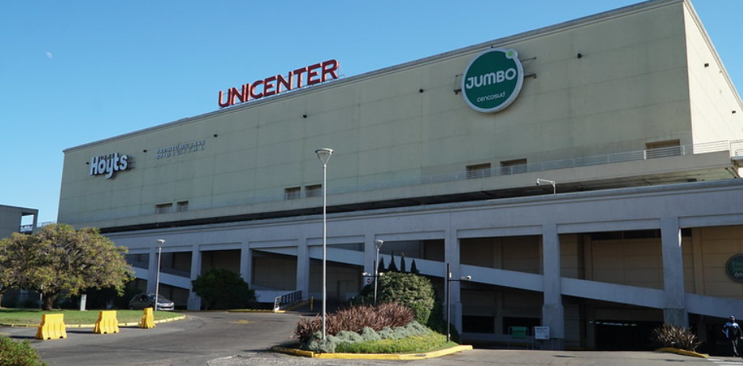
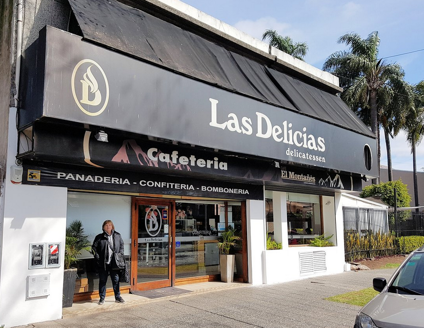
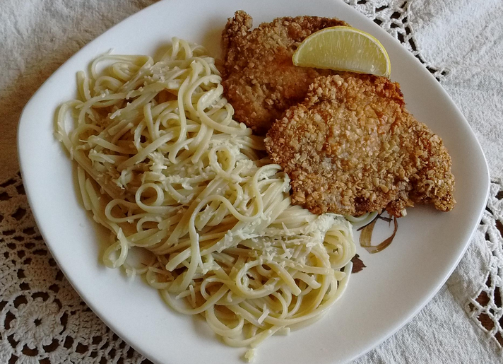
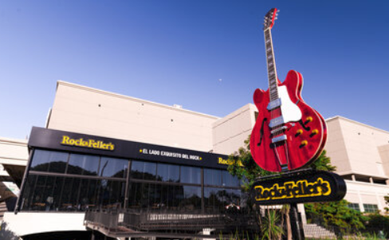
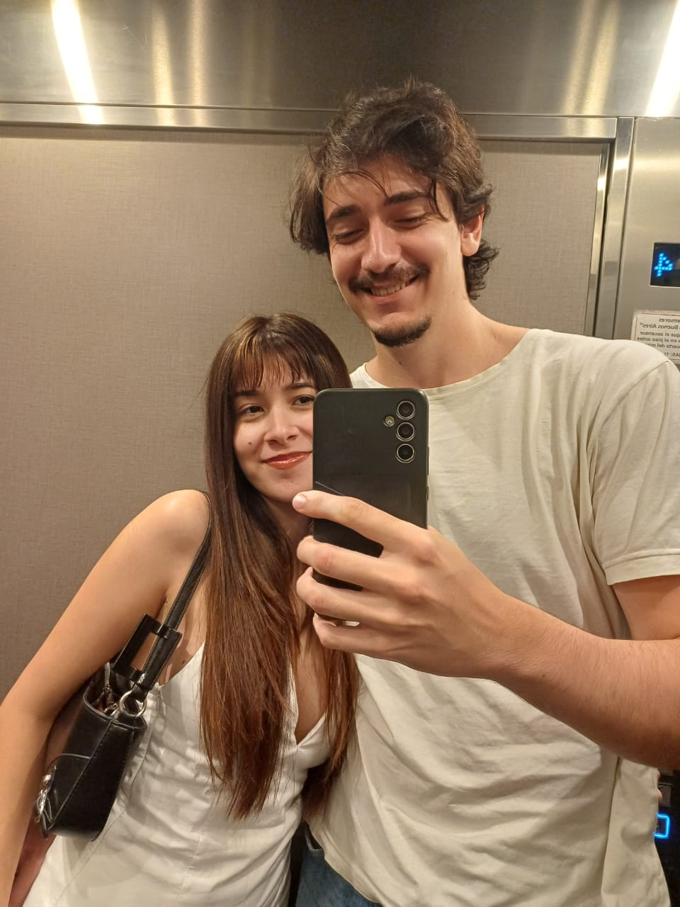
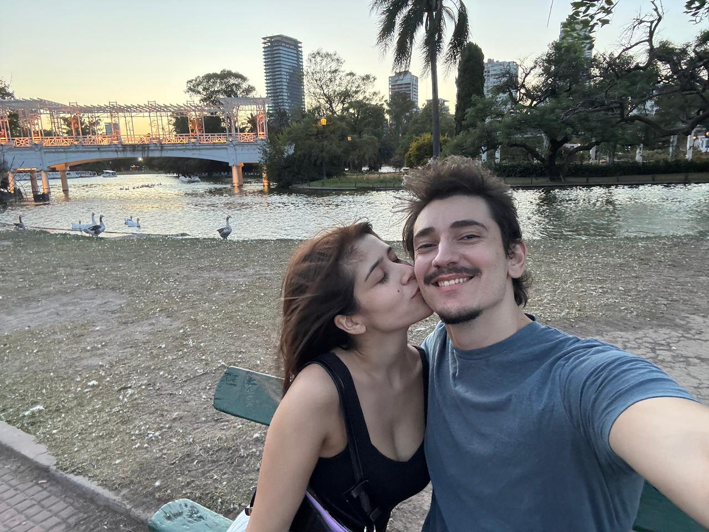
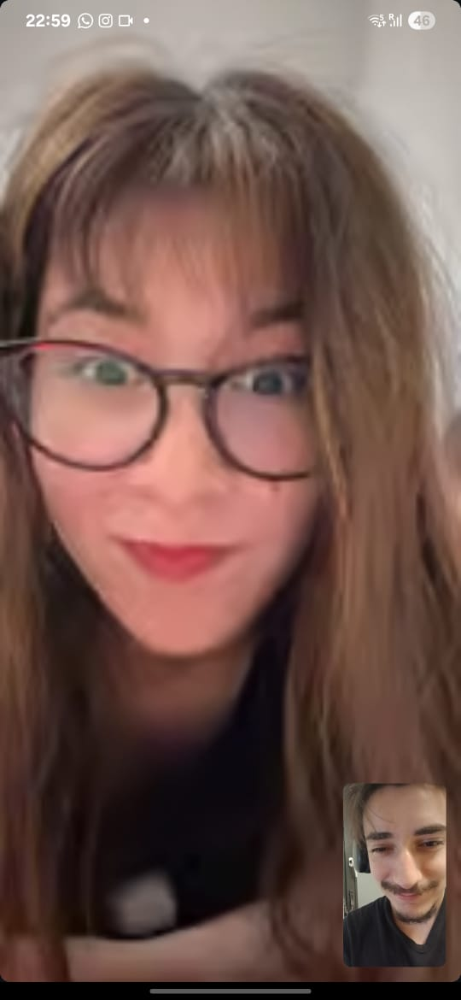

Acompañame a hacer un viaje por lo que viene siendo nuestra historia (desde mi perspectiva)...

Todo empezó en el Unicenter (sí, en esa misma entrada al lado del estacionamiento, super romántico). Ese día no sabía qué esperar de la cita porque había tenido experiencias muy diversas ya, y honestamente el haber viajado hasta ahí era poco común para mí. Ese día, si me hubieras resultado un ñiki ñiki o un "leo que carajo" no me hubiera importado.
Pero eso cambió después de los primeros 10 minutos. Una chica preciosa, inteligente, divertida, con una sonrisa hermosa y, principalmente, muchas (muchas) anécdotas para contar (la mayoría que probablemente hubiera estado mejor no tener jajaj).
Para el final de la cita, me daba igual tener que viajar hasta el unicenter o Boulogne con tal de conocerte un poco más (ya se, ya se, muy palermitano de mi parte decir esto, pero bueno).

La segunda cita fue en Barrancas de Belgrano, donde tuviste el honor (y sí, perdon, es un honor) de conocer las mejores medialunas de Buenos Aires (antes hubiera dicho de capital pero tu contendiente me confirmó que puedo extender ese área).
Hablamos de todo un poco, la vida, tu estudio, tus intereses, qué pensabas de Travis Kelce (y empecé a interiorizarme en el mundo de Taylor Swift).
Me enteré que no te gusta el mate lavado y dulce, que sos fan de Taylor y de Shawn (aunque sea una putita), que te encanta ir a conciertos, que no te gusta la adrenalina entre muchas cosas más.
Y para hacer perfecto el encuentro fue nuestro primer beso.

En la tercera cita fuimos a tu lugar: las Delicias (y sí, lo voy a seguir mencionando en cada ocasión que pueda). Seguí conociéndote y me enteré de algo fundamental: nunca confiar en tu gusto de medialunas.
Ya fue esta vez que empecé a pensar que esto podía ser algo más que algo casual. Y no porque antes no me hubieras convencido, sino porque este había sido
mi máximo histórico de citas y hasta ese momento no había conectado tanto con alguien que además siguiera queriendo salir.

El tiempo siguió pasando (fin de cursada, vacaciones y finales en el medio) y seguimos saliendo. Cada vez que nos veíamos encontraba más cosas de vos que
me gustaban, y quedaba cada vez con más ganas de volver a verte. Fue en esta época que me di cuenta lo mucho que había llegado a quererte en tan poco tiempo,
y que quería apuntar a algo más.
También fue por este momento que aprendí que nunca dejabas ir una discusión hasta que la ganaras, lo cual me enseñó algo muy importante: que siempre tenes la razón
(incluso cuando no la tenés).
PD: No sabes lo nervioso que estaba la vez que comimos milanesas con fideos.
PD2: Se que no me salieron exaactamente asi pero bueno un poco de imaginación no le hace mal a nadie.

Para este punto (finales de diciembre) ya no me quedaban dudas: te quería un montón y no quería perderte. Mis (constantes) chistes malos (en realidad son buenos pero la gente no sabe lo que es el humor)
no te habían alejado y hasta algunos te causaban gracia (!). Pero justamente eso hizo que finalmente te dijera que no iba a estar presente por 5 meses.
Fui con bastante miedo y esperando cualquier reacción, y se que no fue una noche muy feliz pero para rescatar algo que me encantó de este día fue verte manejar esta situación tan complicada de la
manera en que lo hiciste. Aprendí que sabes manejar sitaciones difíciles muy bien (y no con que carajos), y eso solo incrementó mis ganas de seguir con vos.

En este punto ya era difícil no amarte, y aunque no nos veíamos tan seguido, cada vez que lo hacíamos era casi como si el tiempo no hubiera pasado. Me encantaba poder compartir momentos con vos,
aunque fueran cortos, tu compañía se volvía cada día más importante en mi día a día. Sin darme cuenta ya era rutinario hablarte todos los días, contarte lo que me pasaba y compartirte los momentos
buenos y malos. A pesar de que sabías que me iba, decidiste seguir conmigo y creo que nunca te voy a poder transmitir lo feliz que me hizo eso.

Aparte de todo lo que ya conocía de vos vi en persona tus habilidades en la pista de patinaje (y vos por suerte no te fuiste corriendo cuando viste las mías). Patinar de la mano con vos fue mágico.
PD: esa vez que me caí antes de empezar nuestra carrera fue totalmente a propósito, para nada accidental.

De este día no tengo mucho para decir, pero tengo que mencionarlo porque fue el día que me di cuenta que te amaba.

Y llegamos al día de hoy, donde tenemos otro tipo de dinámica con sus ventajas y desventajas, pero juntos, lo que me hace inmensamente feliz.